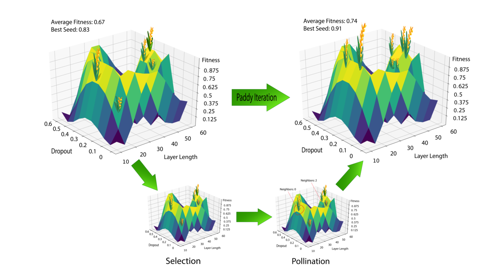

Paddy¶
a python package designed for hyperparameter optimization
Note
Testing note feature
Prebuilt Python module for pip¶
A prebuilt version of Paddy is availible on the Python Package Index (PyPi). It can be installed for recent versions of Python (v3.6.3). Use the following command to install it.
$ python3 -m pip install candiy-paddy
Building the Paddy module manually¶
$ git clone https://github.com/chopralab/paddy.git
$ cd paddy
$ python setup.py bdist_wheel --build-type MinSizeRel -- \
$ -DPYTHON_EXECUTABLE:FILEPATH=`which python` \
$ # Other cmake options here
$ python -m pip install *.whl # The name of the wheel file is dependant on the python version
Requirements for Paddy(v1.0)¶
versions listed are those known to pass testing
Numpy(v1.15.1)Scipy(v1.1.0)Matplotlib(v2.1.0)
optional dependencies needed to run paddy.Default_Keras_MLP: